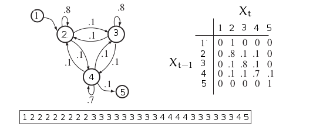
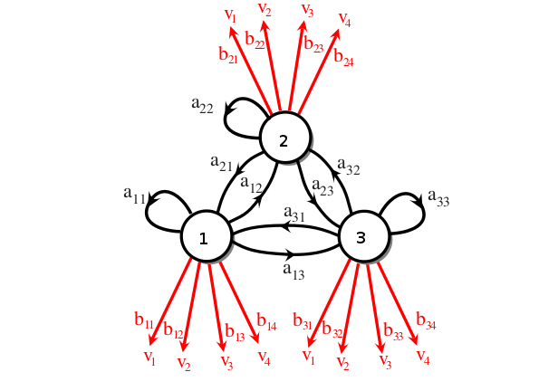
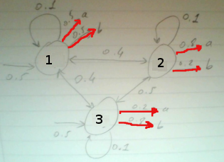
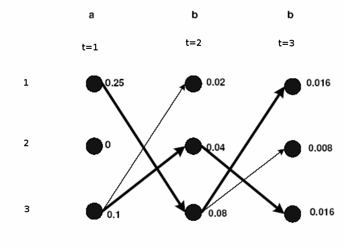
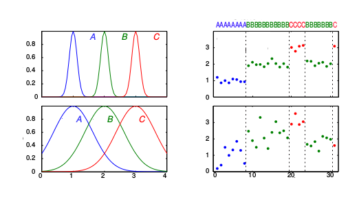

Zaman serilerini temsil etmek için Markov bazlı modeller sıkça kullanılır. Genelde istatistiki analiz bağımsız özdeşçe dağılmış (iid) örneklem noktaları olduğunu farz eder, fakat çoğu zaman serisinde veri noktaları birbirinden bağımsız değildir, \(t\) anındaki bir nokta \(t-1\) anındaki nokta ile bağlantılıdır.
Saklı olmayan Markov modellerini, yani Markov Zincirlerini [5]’de görmüştük. Bir MZ sistemi her \(t\) adımında bir konumda (state) olan bir sistem, \(X_1,..,X_T\) rasgele değişkenleri ile temsil edelim, e bu modelde bir konumdan diğerine geçiş belli olasılıklar üzerinden temsil edilir. Hiç değişme olmaması da aslında bir geçiştir, bu durumda konum kendisine doğru bir geçiş yapar. Matematiksel olarak bir konumdan diğerine geçme olasılığı
\[ P(X_t = j | X_{t-1} = i) \]
ile gösterilir. Önceki adımda \(i\) konumundayız, geçiş sonrası \(j\)’e geliyoruz, \(t\) anındaki konuma geçiş için sadece \(t-1\)’deki konumu bilmek yeterlidir. Resme bakalım,

Konumlar ayrıksal, üstte 1,2,3 gibi değerler görülüyor. Bu değerler anlamı olan yine ayrıksal bir alfabeyi indisliyor olabilirler. Mesela 1 belki “araba’‘, 2 “bisiklet’‘, 3 “uçak’’ gibi. Geçiş olasılıkları bir \(A\) matrisi içinde toplanabilir, resimde görüldüğü gibi, formülsel olarak
\[ P(X_t = j | X_{t-1} = i) = a_{ij} \]
Resimde ayrıca örnek bir konum serisi / dizisi de görüyoruz. Bu şekilde bir seri bilinen MZ geçiş olasılıklarından “üretilebilir’‘; bir başlangıç konumu seçeriz, bir sonrakine geçiş olasılıklarına bakarız (5 tane), bu olasılıklar üzerinden zar atarız, birini seçeriz, ve o konuma geçeriz. İşlemi tekrarlarız. Böylece \(X_1,X_2,..\) “zincirini’’ elde ederiz.
Tam tersi yönde bir hesap yapmamız da gerekebilir; elde bir seri var, ama \(A\) bilinmiyor, o zaman konum dizisinden \(A\) matrisini “öğrenebiliriz’’. Öğrenim için bildiğimiz maksimum olurluk hesabı kullanılır, herhangi bir konum serisinin olasılığı nedir sorusunun cevabı şu formül;
\[ P(X_1=x_1,..,X_T=x_T) = P(X_1=x_1) \prod_{t=2}^{T} P(X_t=x_t | X_{t-1}=x_{t-1}) \]
Üstteki formül bir olurluk (likelihood) hesabı - \(L(A)\) diyelim,
\[ L(A) = P(X_1=x_1) \prod_{ t=2}^{T} a_{x_{t-1},x_t} \]
Olurluğun maksimize edilmesi ardından \(A\) için bir tahmin edici (estimator) hesaplanabilir - detaylar için [2, Ders 6]; \(n_{ij}\)’yi veri serisinde \(i\)’inci konumdan \(j\)’ye kaç kere geçildiğinin sayısı olarak tanımlarsak, \(A\) tahmin edicisi şöyle olur,
\[ \hat{a}_{ij} = \frac{n_{ij}}{\sum_j n_{ij}} \]
Bu hesap akla yatkın (intuitive) bir sonuç, çünkü \(i\)’den \(j\)’ye geçiş “olasılığını’’ veriden hesaplamak istiyorsak, veride \(i\)’den \(j\)’ye kaç kere geçildiğini sayıp, bu sayıyı yine verideki tüm \(j\)’ye olan geçişlere (hangi konumdan olursa olsun) bölmek bize iyi tahmin sağlar. Bir Gaussian’ın \(\mu\)’sünü tahmin ederken tüm reel veri noktalarını toplayıp bölmek aynı şekilde akla yatkın bir tahmin edicidir.
Şimdi MZ kavramına bir ek daha yapalım. Diyelim ki bir katman daha ekleyeceğiz, öyle ki artık konum geçişlerini dışarıdan göremiyoruz, sadece konumların başka bir dağılıma göre dışarıya ürettiği farklı bir alfabeden değerleri görüyoruz.

Konum geçişleri bu sayede “saklı’’ hale geldi, ve bir HMM elde ettik. Matris olarak görelim,
\[ A = \left[\begin{array}{rrr} a_{11} & a_{12} & a_{13} \\ a_{21} & a_{22} & a_{23} \\ a_{31} & a_{32} & a_{33} \end{array}\right], \qquad B = \left[\begin{array}{rrrr} b_{11} & b_{12} & b_{13} & b_{14} \\ b_{21} & b_{22} & b_{23} & b_{24} \\ b_{31} & b_{32} & b_{33} & b_{34} \end{array}\right] \]
Üstteki model bir ayrıksal HMM örneğidir, yani hem saklı geçişler ayrıksal (Markov durumunda hep öyle olmak zorunda) ve dışarı üretilen değerler de ayrıksal. Dışarı yansıtılan / salımlanan (emission) sembollerinden 4 tane var, \(v_1,v_2,v_2,v_4\). Salımlar sürekli de olabilirdi, mesela her konumun ayrı bir Gaussian dağılımı olabilirdi. Bu konuya sonra değineceğiz.
Not: Salım sembolleri olarak \(v_1,v_2,..\) kullandık fakat matematik olarak bunlar da aslında bir indis; saklı konumların aynı şekilde tamsayı olan indisleri ile karışmaması için semboller seçildi. Tabii aynen saklı konumda olduğu gibi salımların indisleri de herhangi bir alfabeyi indeksleyebilir. Mesela 1 “a’‘, 2 “b’’ olabilir. İndislerin direk kendisi de kullanılabilir; mesela saklı konumlara bağlı zar atışlarını modelliyorsak salımlar 1,2,3,4,5,6 olacaktır.
Devam edelim; HMM bu salım sembollerinden herhangi birini üretebilir, ama her saklı konumda üretim farklı bir dağılıma göre olur. Bu dağılımları içeren salım olasılıkları ayrı bir \(B\) matrisi üzerinde tutulur. Matrisin boyutu 3 saklı 4 görünen konum üzerinden \(3 \times 4\) olmalıdır, ve matrisin öğeleri \(b_{jk}\)’nin matematiksel tanımı,
\[ b_{jk} = P (V_t = k | X_t = j ) \]
(Görüldüğü gibi üstte salım indisini kullandık). \(V_t\) değişkeni \(t\) anında gizli \(j\) konumunda olan bir HMM’in ürettiği semboldur. İki şarttan bahsetmek lazım şimdi, bunlardan birincisi pür MZ durumunda da geçerli,
\[ \sum_j a_{ij} = 1, \quad \forall i\]
HMM ek bir şart,
\[ \sum_k b_{jk} = 1, \quad \forall j \]
Şimdi diyelim ki \(V\) bir görünen sembol vektörü, \(S_r\) ise \(T\) boyutunda bir saklı konum vektörü, ve bu boyutta olabilecek tüm konum serilerini düşünelim, \(c\) mümkün gizli konum için \(c^T\) tane olur. \(T=6\) için bir vektör \(S_1 = \{1,4,2,2,1,4\}\) gibi.. Şimdi görünen herhangi bir dizinin olasılığını hesaplayalım,
\[ P(V) = \sum_{r}^{c^n} P(V | S_r) P(S_r) \qquad (1) \]
Üstteki formüldeki \(P(S_r)\)’in açılımını MZ’lerden zaten biliyoruz,
\[ P(S_r) = \prod_{t=1}^{T}P(X_t|X_{t-1}) \]
Yani gizli konum geçişlerine tekabül eden \(a_{ij}\)’leri bulup onları sırasıyla çarpıyoruz. Üstteki \(\{1,4,2,2,1,4\}\) örneği için bu çarpım \(a_{14}a_{42}a_{22}a_{21}a_{14}\) olurdu.
Ayrıca \(P(V|S_r)\)’in açılımını da biliyoruz,
\[ P(V|S_r) = \prod_{t=1}^{T} P(V_t | X_t) \]
Birleştirelim ve (1)’i genişletelim,
\[ P(V) = \sum_{r}^{c^T} \prod_{t=1}^{T} P(V_t | X_t) P(X_t|X_{t-1}) \]
Formül biraz korkutucu duruyor ama aslında söylediği şu: verilen bir \(V\)’nin olasılığını hesaplamak için tüm mümkün saklı konum dizileri üzerinden bir toplam almalıyız, bu toplamdaki her dizi için \(a_{ij}\) üzerinden gizli geçişlerin çarpımını alırız, sonra görünen salımların bir çarpımını alırız, ki bu bilgi zaten \(b_{jk}\) içinde. \(A,B\) bilindiğine göre tarif edilen işlemler direk yapılabilir.
Fakat bu hesap aşırı yüksek boyutlu bir hesaptır, çetrefilliği \(O(c^T \cdot T)\), mesela \(c=10,T=20\) olsa \(10^{21}\) ölçeğinde bir hesaptan bahsediyoruz. İçinde \(c\) sembol olan bir alfabenin \(n\) uzunluğunda çok fazla farklı dizilimi mümkündür.
İleri Algoritması (Forward Algorithm)
Fakat \(P(V)\)’yi literatürde ileri algoritması denilen bir yöntemle özyineli (recursive) olarak hesaplamak mümkündür. Bakıyoruz her terim $P(V_t | X_t) P(X_t|X_{t-1}) $için sadece \(V_t,X_t,X_{t-1}\) gerekli. O zaman özyineli hesap için yeni bir değişken tanımlarız, bilinen bir model \(\lambda = (A,B)\) için
\[ \alpha_t(i) = P(V_1,V_2,..,V_t, X_t = i; \lambda) \]
Bu gözlenen salım dizisinin sadece bir kısmı üzerinden tanımlanmış bir olasılık; tanıma göre zaman indisi 1’den \(t\)’ye kadar, ve bu en son \(t\) noktasında saklı konum \(i\)’de olmalı. Özyineli tanımı görmek için \(\alpha_1(i)\)’nin ne olduğuna bakalım, notasyon kısalığı için \(\pi_i = P(X_1 = i)\),
\[ \alpha_1(i) = \pi_i b_{i,V_1} \]
Tümevarımsal (induction), özyineli kısım ise şöyle tanımlanır,
\[ \alpha_{t+1}(j) = \bigg[ \sum_{i=1}^{c} \alpha_t(i)a_{ij} \bigg] b_{j,V_{t+1}} \]
Formülün niye performans ilerlemesi getirdiğini görmek için örnek 1,2,3,4 gizli konumların tüm permutasyonlarının düşünelim,
import itertools
l = list(itertools.permutations([1, 2, 3, 4]))[:10]
for x in l: print (x)
print ('...')(1, 2, 3, 4)
(1, 2, 4, 3)
(1, 3, 2, 4)
(1, 3, 4, 2)
(1, 4, 2, 3)
(1, 4, 3, 2)
(2, 1, 3, 4)
(2, 1, 4, 3)
(2, 3, 1, 4)
(2, 3, 4, 1)
...Mesela \(t=2\)’de \(\alpha_2(V_2)\) hesabını düşünelim; bu hesap ilk satırdaki 1,2,.. için bir kere yapılmış olacaktır, 2. satırda bir daha hesaplanması gerekmez. Hatta daha geriye gidersek ilk adımda 1 konumunda olan tüm satırlar da (6 tane) sadece bir kez \(\alpha\) ile hesaplanırlar.
Geri Algoritması (Backward Algorithm)
Benzer şekilde \(\beta_t(i)\) üzerinden bir geri algoritması diye bilinen bir algoritma vardır; bu algoritma ileri versiyonun bir nevi aynadaki yansıması. Bu algoritmada \(t=1\)’den ileri değil, \(T\)’den geriye doğru gitmiş oluyoruz.
\[ \beta_t(i) = P(V_{t+1}, v_{t+2},...,V_{T} | X_t = i ; \lambda ) \]
Bu formül bilinen model \(\lambda\) ve \(t\) anında saklı konum \(i\)’de olma koşuluna göre, \(t+1\)’den en sona kadar olan verili salımların olasılığının hesabını yapar. Özyineli adım,
\[ \beta_T(i) = 1 \]
\[ \beta_t(i) = \sum_{j=1}^{c} a_{ij}b_{j,V_{t+1}} \beta_{t+1}(j) \]
Viterbi Algoritması
Bilinen \(\lambda\) için verili bir \(V\) salımlarına tekabül eden saklı konum geçişlerini bulmak için Viterbi algoritması kullanalım. Detaylara girmeden önce hemen bir örnek görelim [3, sf. 606].
Bir kumarhanede tek zar üzerinden oynanan bir oyunda zarların hileli olduğundan şüphe ediyoruz. Bu problemi HMM ile şu şekilde modelleyebiliriz: bir iyi zar bir de hileli zar var. Bu iki zar iki farklı “saklı’’ konuma tekabül edecekler. Ama biz bu saklı konumları görmüyoruz, sadece zar atışlarının sonucunu görüyoruz.
Üstteki modele göre hileli zardan 6 gelme olasılığı (salım olasılığı) daha yüksek. İki saklı konum arasındaki geçiş anormal sayılmaz, “arada sırada’’ birinden bir konumdan diğerine geçiş var, kumarhane”bazen’’ zarları değiştiriyor yani. Şimdi saklı geçişi bulalım,
import dhmm
rolls = [1,2,4,5,5,2,6,4,6,2,1,4,6,1,4,6,1,3,6,1,3,6,\
6,6,1,6,6,4,6,6,1,6,3,6,6,1,6,3,6,6,1,6,3,6,1,\
6,5,1,5,6,1,5,1,1,5,1,4,6,1,2,3,5,6,2,3,4,4]
rolls = np.array(rolls)-1
a = np.array([[0.95, 0.05],[0.05, 0.95]])
b = np.array([[1/6., 1/6., 1/6., 1/6., 1/6., 1/6.],
[1/10.,1/10.,1/10.,1/10.,1/10.,1/2.]])
pi = np.array([0.5, 0.5])
hmm = dhmm.HMM(2,6,pi,a,b)
print (hmm.viterbi_path(rolls))[0 0 0 0 0 0 0 1 1 1 1 1 1 1 1 1 1 1 1 1 1 1 1 1 1 1 1 1 1 1 1 1 1 1 1 1 1
1 1 1 1 1 1 1 1 1 1 0 0 0 0 0 0 0 0 0 0 0 0 0 0 0 0 0 0 0 0]Müthiş! Viterbi ile ne zaman hileli, ne zaman düzgün zar kullanıldığını pat diye hesapladık. Kumarhane önce hilesiz başlıyor, ardından zarları değiştiriyor ve uzun süre hile yapıyor.
Algoritmanın nasıl işlediğini anlamak için farklı bir modele bakalım,

Bu modelde 3 tane saklı konum var, ve salım alfabesi \(a,b\) (tabii kodlama / matematiksel olarak 1,2 olacak). Viterbi algoritmasının işleyişini anlatmak için saklı konumlar ve aralarındaki geçiş zamana doğru sağa doğru yayılacak şekilde resimlenir, bu resme “trellis’’ deniyor.

Kısayol algoritması şöyle; üstteki resimde zaman/konum düğümlerine başlangıçtan o noktaya gelmenin olasılığı yazılmış. Yani bu değer o noktanın ne kadar olası olduğunu gösteriyor. Hesabın bir örneği; trellisin ortasından secelim, diyelim ki \(t=1\) anında 3 konumundan 1 konumuna geçmek istiyoruz, bu geçiş sonrası yol ne olur? \(t=1\)’de 3 üzerinde 0.1 diyor, 3-1 geçişinin olasılığı 0.4 çarpı 1 konumundan ‘b’ salımı olasılığı 0.5, o zaman 0.10.40.5 = 0.02. Böylece başla-3-1 yolunun olasılığı 0.02 haline geldi. Bu hesap sağa doğru genişletilir, eğer bir noktaya birden fazla geçiş mümkün ise, nihai hesaplar arasında en yüksek olan seçilir. En sağa geldiğimizde 1’de biten bir 0.016 yolu görüyoruz, bir de 3’de biten bir 0.016 yolu görüyoruz. İki yolun hesabı aynı çıktı, çoğunlukla bu durum olmaz, fakat bu yollardan herhangi birini seçmek, ya da ikisini birden raporlamak problem değildir.
Yolu dhmm’e hesaplatırsak,
import dhmm
a = np.array([[0.1,0.4,0.4],[0.4,0.1,0.5],[0.4,0.5,0.1]])
b = np.array([[0.5,0.5],[0.8,0.2],[0.2,0.8]])
pi = np.array([0.5, 0, 0.5])
hmm = dhmm.HMM(3,2,pi,a,b)
print (hmm.viterbi_path([0,1,1]))[0 2 0]Eğer 1 ve 3’e en soldan giriş yapan bir başlangıç noktası S, ve en sonda tüm düğümlerin gittiği bir bitiş noktası E hayal edersek, aslında üstteki tarif edilen [6] yazısında anlatılan kısayol algoritmasına benziyor. Elimizde bir yönlü ve çevrimsiz bir çizit (directed, acyclic graph) var, S’den başlıyoruz, sürekli adım atarak arkada bıraktığımız yolun uzunluğunu (bu durumda olasılığını) sürekli toplayarak her adımda hesaplıyoruz, ve hatırlıyoruz (gerçi üstteki örnekte olasılıklar çarpıldı -çünkü o yolun birleşik olasılığı hesaplanmalıydı- fakat log alınıp toplanabilirdi, hatta sayısal stabilite sebepleriyle bu yapılmalıdır). Trellis’teki her geçiş çizitte bir kenar, daha önce kullandığımız örnek \(t=1\) anındaki 3-1 geçişi için kenar 0.4*0.5=0.2. Bu kenarlar takip edilerek bir kısayol bulunacaktır.
Model Öğrenmek, İleri-Geri Algoritması
HMM’in güzellikleri bitmedi; sadece görünen semboller dizisini kullanarak, sadece kaç tane saklı konum olacağını tanımlayarak, tüm HMM modelini öğrenmek mümkün. Yani \(A,B\) matrisleri, ve tabii ki bunu elde edince görünen salımlara tekabül eden saklı geçişleri de hesaplayabilecegiz. Kumarhane örneğine dönelim, yeni bir HMM yaratalım, ve dışarıdan bir model tanımlamadan, onu direk veri ile eğitelim.
a2 = np.array([[0.1,0.4,0.4],[0.2,0.3,0.5],[0.6,0.3,0.1]])
b2 = np.array([[1/6.,1/6.,1/6.,1/6.,1/6.,1/6.],
[1/10.,1/10.,1/10.,1/10.,1/10.,1/2.],
[1/8.,1/8.,1/8.,1/8.,1/8.,1/8.]])
pi2 = np.array([0.5,0.2,0.3])
rolls2 = [1,2,4,5,5,2,6,4,6,2,1,4,6,1,4,6,1,3,6,1,3,6,\
6,6,1,6,6,4,6,6,1,6,3,6,6,1,6,3,6,6,1,6,3,6,1,\
6,5,1,5,6,1,5,1,1,5,1,4,6,1,2,3,5,6,2,3,4,4]
rolls2 = np.array(rolls2)-1
# Add debug prints to confirm the shapes before initialization
print(f"DEBUG: Shape of 'a2' before hmm2 init: {np.shape(a2)}")
print(f"DEBUG: Shape of 'b2' before hmm2 init: {np.shape(b2)}")
print(f"DEBUG: Shape of 'pi2' before hmm2 init: {np.shape(pi2)}")
# Use the new variables for hmm2
hmm2 = dhmm.HMM(3, 6, pi2, a2, b2) # Pass the new variables
print(f"DEBUG: hmm2.prior before train: {hmm2.prior}")
print(f"DEBUG: type(hmm2.prior) before train: {type(hmm2.prior)}")
hmm2.train([rolls2],iter=20) # Use rolls2 here
print (hmm2.viterbi_path(rolls))
print ('aic', hmm2.aic())
print (hmm2.transmat)
print (hmm2.prior)
print (hmm2.obsmat)[0 0 0 0 0 0 0 1 1 1 1 1 1 1 1 1 1 1 1 1 1 1 1 1 1 1 1 1 1 1 1 1 1 1 1 1 1
1 1 1 1 1 1 1 1 1 1 0 0 0 0 0 0 0 0 0 0 0 0 0 0 0 0 0 0 0 0]
aic 233.31799296
[[ 0.97008754 0.02991246]
[ 0.32816368 0.67183632]]
[ 0.5 0.5]
[[ 0.12184793 0.23208224 0.19549656 0.10143301 0.27422243 0.07491783]
[ 0.18905143 0.2018225 0.17782606 0.17010257 0.01788689 0.24331055]]Saklı konum geçişleri aynı çıktı! Gerçi eğitimi birkaç kez işletmek gerekti, çünkü HMM eğitimi bir tür Beklenti-Maksimizasyon (Expectation-Maximization -EM-) algoritması kullanır, ve bu algoritmanın yerel maksimada takılıp kalması mümkündür, o yüzden birkaç kez işlettik, ve AIC’si en düşük olanı seçtik. Fakat bu zaten EM kullanıldığında uygulanması tavsiye edilen bir tekniktir.
Detaylara inmeden önce formülsel olarak, bize verili bir \(V\) dizisi bağlamında \(t\) anında \(i\) konumunda olmanın olasılığı lazım; yani \(P(X_t = i | V; \lambda)\). Bu formüle nasıl erişiriz? \(X_t = i\) ile \(V\)’nin birleşik dağılımını düşünelim (\(\lambda\)’yi kalabalık olmasın diye göstermiyoruz), onu \(V\)’leri ortadan bölerek iki parçalı olarak gösterebiliriz,
\[ P(X_t = i, V) = P( V_1,V_2,..,V_t,X_t=i) P (V_{t+1},V_{t+2},..,V_T | X_t=i ) \]
Eşitliğin sağ tarafındaki ilk kısım \(\alpha\) ikinci kısım \(\beta\) değil mi? Evet. O zaman
\[ = \alpha_t(i) \beta_t(i) \]
Fakat hala \(V\)’nin verili olduğu hali elde etmedik, onun için bir bölüm lazım. Bölümü yapalım ve sonuca yeni bir sembol verelim,
\[ \gamma_t(i) \equiv P(X_t = i | V) = \frac{P(X_t = i, V) }{P(V)} = \frac{\beta_t(i)\alpha_t(i)}{ P(V)} \]
Bu noktada, teorik olarak,
\[ \underset{argmax}{1 \le i \le c} [ \gamma_t(i) ] \]
çözümü, yani \(t\) anında \(\gamma_t(i)\) maksimize edecek en iyi \(X_t\) konumunu bulmak ve bunu tüm \(t\)’ler için yapmak bize verili \(V\) için en optimal saklı yolu verir diye düşünebilirdik, fakat üstteki ifade teker teker konumlara bakıyor, ve geçişleri gözönüne almıyor. Bunun için Viterbi algoritması hala en iyi çözüm. Detaylar için [1]. Her halükarda, üstteki ifade bize eğitim için yardımcı olacak.
Devam edelim, \(\xi\)’i tanımlayalım,
\[ \xi_t(i,j) = P(X_t = i, X_{t+1}= j | V; \lambda) \qquad (2) \]
\(\xi\) ile \(t\) anında \(i\) konumunda \(t+1\) anında \(j\) konumunda olma olasılığını tanımlamış oluyoruz. Üstteki ifadeyi
\[ = \frac{\alpha_t(i)a_{ij}b_{j,V_{t+1}}\beta_{t+1}(j) }{P(V;\lambda)}\]
olarak yazabiliriz, ve
\[ = \frac{\alpha_t(i)a_{ij}b_{j,V_{t+1}}\beta_{t+1}(j) } {\sum_{i=1}^{c}\sum_{j=1}^{c} \alpha_t(i)a_{ij}b_{j,V_{t+1}}\beta_{t+1}(j) } \]
Bölendeki ifade bölünendeki ifadenin tüm \(i,j\) üzerinden alınan toplamının geriye sadece \(P(V;\lambda)\) bırakacak olmasından ileri geliyor, çünkü (2)’den hareketle bölünendeki ifade \(P(X_t = i, X_{t+1}= j, V; \lambda)\).
\(\gamma_t(i)\)’yi daha önce \(V\)’nin verildiği ve \(\lambda\) modeli bilindiği durumda \(t\) anındaki saklı konum \(i\)’de olmak diye açıklamıştık. O zaman \(\gamma_t(i)\) ve \(\xi_t(i,j)\) arasında bir ilişki kurabiliriz,
\[ \gamma_t(i) = \sum_{j=1}^{c} \xi_t(i,j) \]
Eğer \(\gamma_t(i)\)’nin tüm \(t\)’ler üzerinden toplamını alırsak, bu hesap tüm zamanlar için \(i\) konumunda olmanın, ya da \(i\) konumundan başka herhangi bir konuma geçmiş olmanın beklentisi olarak görülebilir (tabii en son zaman indisi \(T\)’yi bu durumda toplamdan çıkartmak lazım, çünkü o noktadan başka bir noktaya geçmek mümkün değil). Aynı şekilde \(\xi_t(i,j)\)’nin \(t=1,..,T-1\) üzerinden toplamını almak, bize konum \(i\) ve \(j\) arasındaki tüm geçişlerin beklentisini verebilir.
\[ \sum_{t=1}^{T-1} \gamma_t(i) = \textrm{ i'den başka bir konuma geçiş beklentisi} \]
\[ \sum_{t=1}^{T-1} \xi_t(i,j) = \textrm{ i'den j'ye geçiş beklentisi} \]
Üstteki formülleri kullanarak HMM’in parametreleri \(\lambda = (\pi,A,B)\)’yi tahminsel hesaplamak mümkündür.
\[ \overline{\pi} = \textrm{t=1 anında i konumunda olma frekansı} = \gamma_1(i) \qquad (3) \]
\[ \overline{a_{ij}} = \frac{\textrm{i konumundan j konumuna geçiş beklentisi}} {\textrm{i konumundan başka herhangi bir konuma geçişin beklentisi}} \]
\[ = \frac{ \sum_{t=1}^{T-1}\xi_t(i,j) }{ \sum_{t=1}^{T-1} \gamma_t(i) } \qquad (4) \]
\[ \overline{b_{j,k}} = \frac{\textrm{j konumunda olup } v_k \textrm{ sembolunu görmüş olmanın beklentisi}} {j \textrm{ konumunda olmanın beklentisi} } \]
\[ = \frac{\sum_{t=1}^{T-1} \gamma_t(j) 1(V_t=k) }{\sum_{t=1}^{T-1}\gamma_t(j) } \qquad (5) \]
Tüm bunları kullanarak eğitim yaklaşımını şöyle belirleyebiliriz: bir \(\lambda=(\pi,A,B)\) modeli ile başla, ki başlangıç model rasgele değerler ile bile tanımlanmış olabilir. Ardından formüller (3,4,5)’i kullanarak \(\overline{\pi},\overline{a_{ij}}\) ve \(\overline{b_{j,k}}\)’yi hesapla. Bu hesap ardından Baum ve arkadaşları tarafından ispatlanmıştır ki [1] \(P(V;\overline{\lambda}) > P(V;\lambda)\), yani yeni hesaplanan model veriyi eskisinden daha iyi açıklayacaktır. O zaman üstteki hesapları yeni hesaplanan \(\overline{\lambda}\) ile tekrarlarsak, tekrar daha iyi bir model elde ederiz. Bunu ardı ardına yaparsak en optimal modele erişmiş oluruz. Bu yaklaşım aslında bir Beklenti-Maksimizasyon’dur (EM). Karışım modellerinde olduğu gibi akılda tutmak gerekir ki EM lokal maksima’yı bulur, eğer bu maksimum nokta global (tüm modelin) maksimumu değil ise yanlış bir noktada takılıp kalmış olabilir. Bu yüzden standart tekniği burada da kullanıyoruz, farklı rasgele başlangıç noktalarından başlatıp en iyi olurluğu rapor eden modeli nihai model olarak seçeriz.
Sürekli Salımlar (Continuous Emissions)
Şimdiye kadar gördüğümüz ayrıksal HMM’ler her konumunda farklı bir ayrıksal dağılıma göre zar atıyordu. A,B,C konumları olsun, A konumundan ayrıksal dağılım \(\left[\begin{array}{ccc} 0.2 & 0.5 & 0.3 \end{array}\right]^T\)’a göre zar atıyor olabiliriz, B konumunda farklı bir ayrıksal dağılım \(\left[\begin{array}{ccc} 0.4 & 0.5 & 0.1 \end{array}\right]^T\)’e göre zar atıyor olabiliriz.
Fakat HMM matematiği ayrıksal dağılımlar ile kısıtlı değildir. Her konumun salım dağılımının ayrıksal olduğu gibi sürekli olması da mümkündür.

Üstteki resimde iki tane HMM gösteriyoruz, A,B,C diye tanımlı 3 konum var (üst sıra bir HMM, alt sıra bir diğeri). Bu modele göre her konumda farklı olan salım dağılımı ayrıksal değil, bir Gaussian. Mesela 1. HMM için A konumunun mavi renkle gösterilen tek boyutlu bir Gaussian dağılımı var (sol üst köşe), bu Gaussian \(\mu=1\) üzerinden tanımlı, yeşil olan \(\mu=2\), vs. 1. HMM için örnek bir sürekli salım zinciri üst sağ köşedeki gibi olabilir. Bir blokta 1 değeri etrafında bazı değerler görüyoruz, ardından 2 etrafında bir blok, sonra 3, sonra 2, böyle devam ediyor. Bu salım değerlerine bakarak bir HMM’i eğitip hangi konumda hangi Gaussian olduğunu ve konumlar arası geçiş olasılıklarını öğrenebiliriz! Resimde alt sırada farklı Gaussian’lar ve (tabii ki) daha farklı salım zinciri var (saklı geçiş zinciri aynı, ki bu durum modele uygun, fakat saklı zincir biraz daha farklı da olabilirdi).
Sürekli dağılım bazlı HMM matematiği biraz daha farklı, bu konunun detayları için [3, sf. 603].
Kaynaklar
[1] Rabiner, {}
[2] Shalizi, Statistics, Chaos, Complexity and Inference Lecture
[3] Murphy, Machine Learning, A Probabilistic Perspective
[4] Zuccini, Hidden Markov Models for Time Series
[5] Bayramlı, Lineer Cebir, Ders 21
[6] Bayramlı, Bilgisayar Bilim, Dinamik Programlama